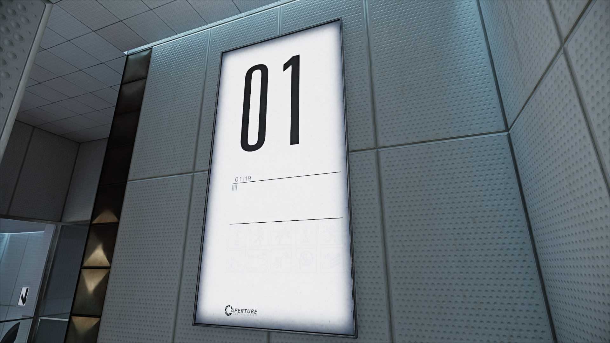
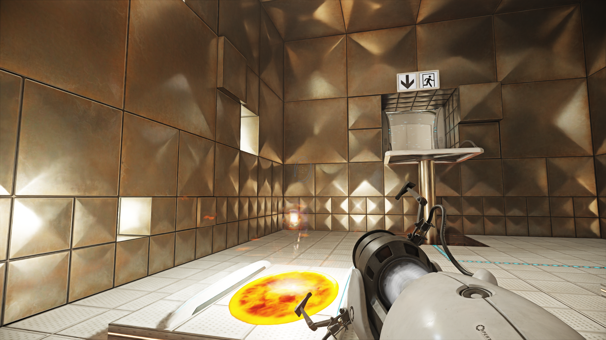
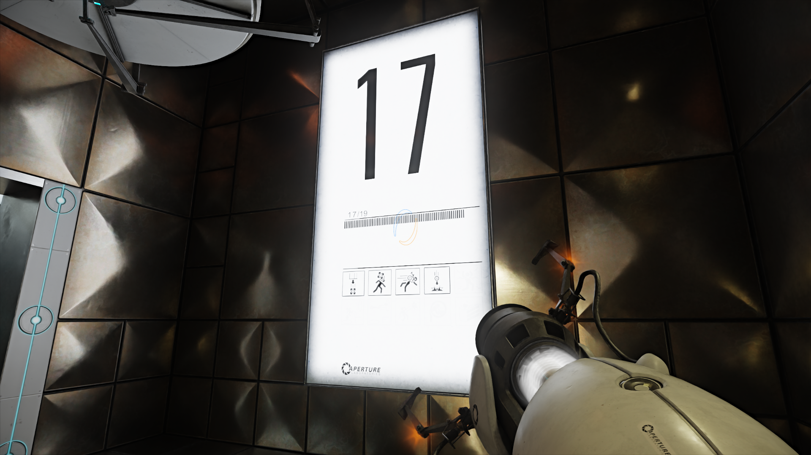
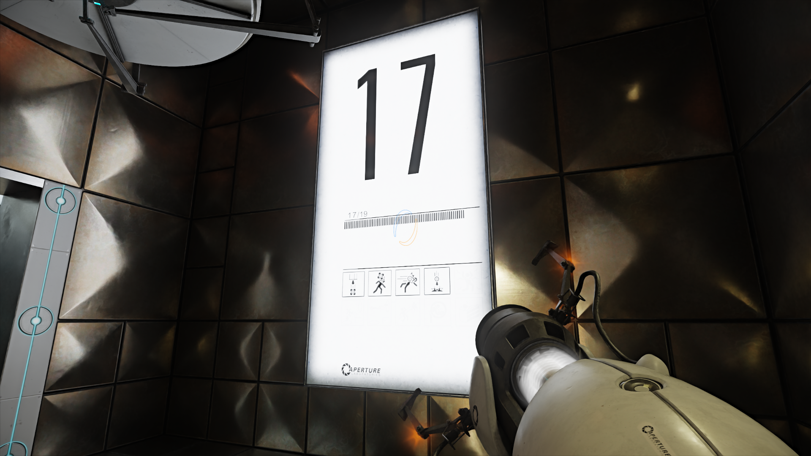
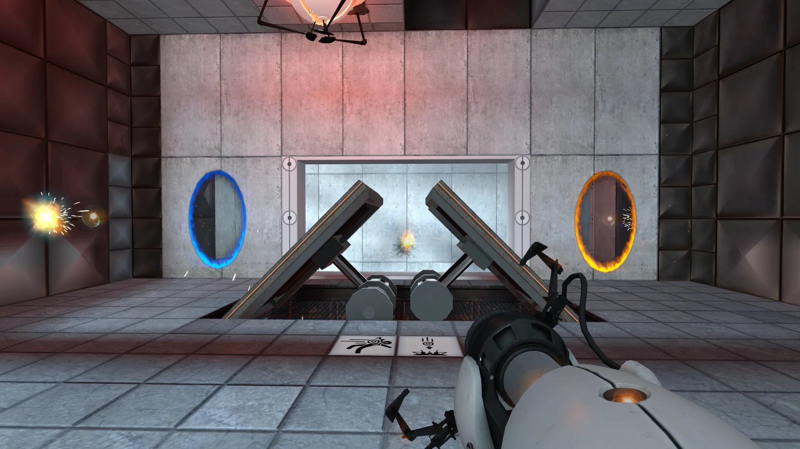
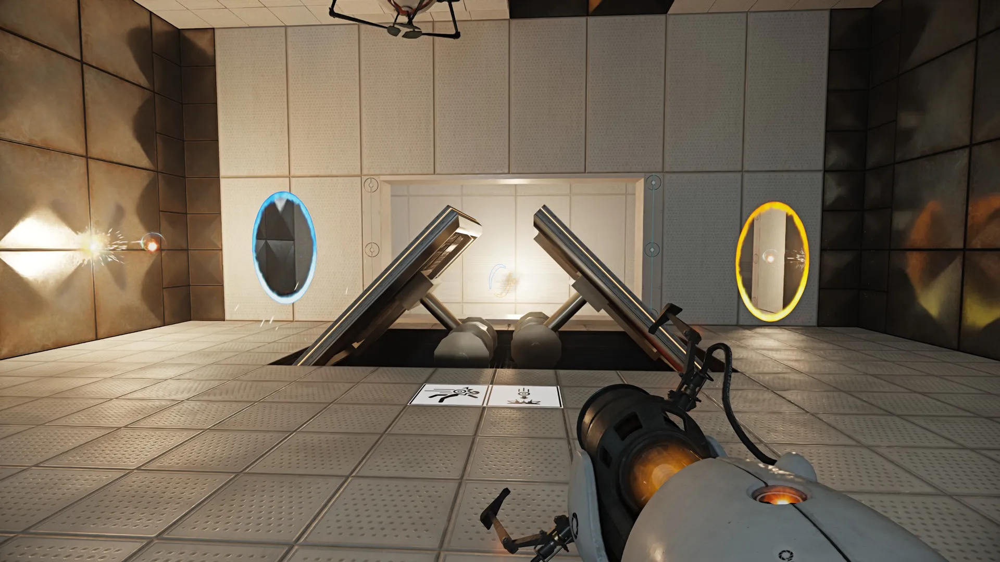
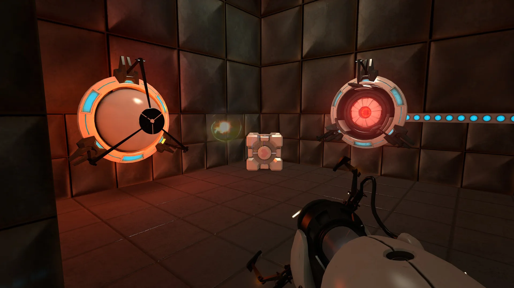
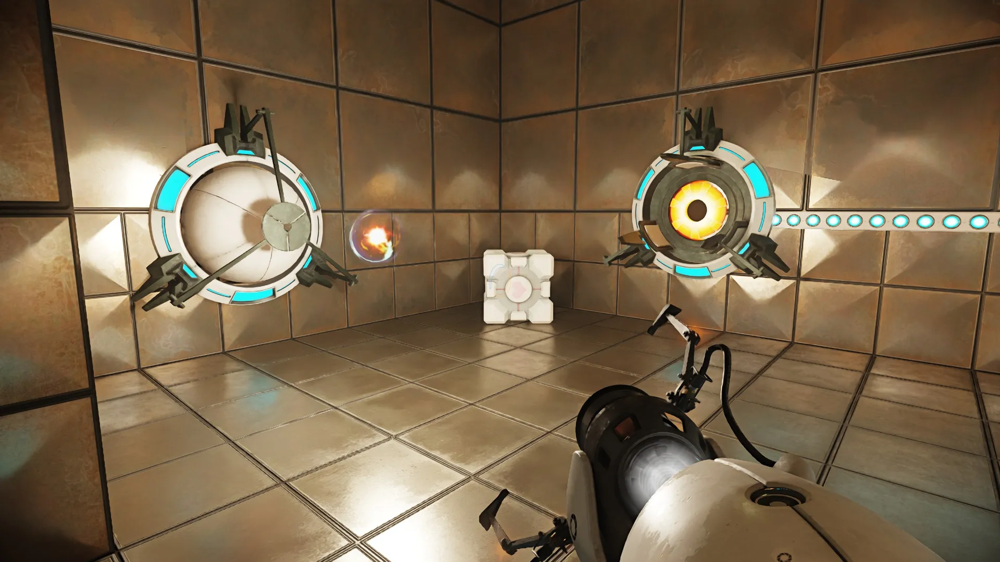
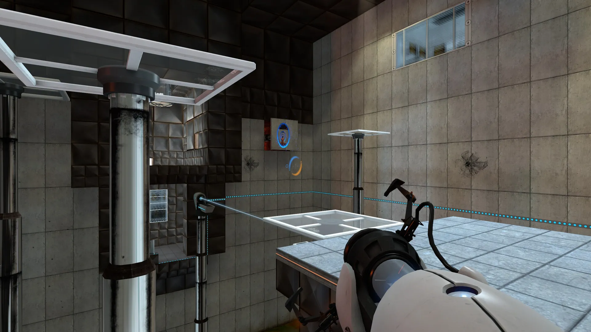
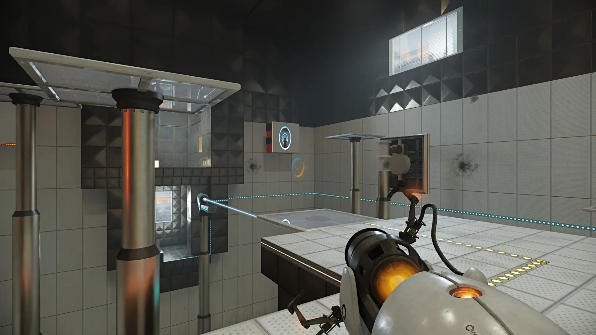

PORTAL WITH RTX
PORTAL Like You've Never Experienced It Before
Portal with GTX allows the game to run in gorgeous 4k resolution, giving you the best visuals the market has to offer and with DLLS 3’s anti-aliasing allows you to experience the classic game in way above 60FPS. Once you’ve played Portal like this, it’ll make you question if you’ve ever truly played Portal at all.
One thing is for certain. You will never look back.


 

The Magic of Ray tracing
By doing this, ray tracing creates lifelike reflections, shadows, and lighting effects that are very close to what we see in real life. For example, it can make a shiny surface reflect nearby objects, or show how a glass of water bends light as it passes through. It also helps in making shadows look softer and more natural.
Because ray tracing simulates light’s behavior in such detail, it produces stunning images, but it’s also very demanding for computers. This is why it’s often used in movies or high-end video games, where creating the most realistic visual experience is important. Essentially, ray tracing is a powerful tool for making digital images look just like what we would see in the real world.
Better with RTX!

PORTAL (2007)

PORTAL with RTX (2022)

PORTAL (2007)

PORTAL with RTX (2022)

PORTAL (2007)

PORTAL with RTX (2022)